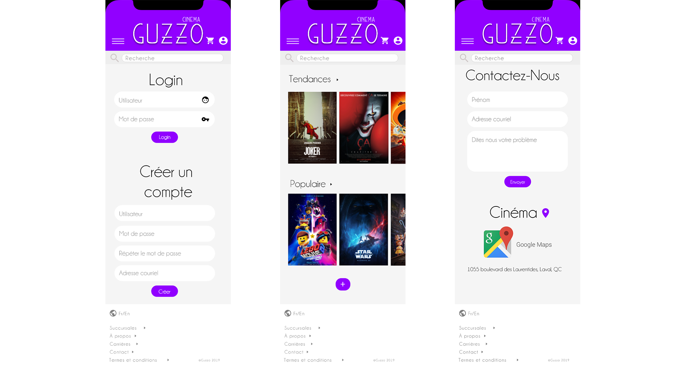

Cinémas Guzzo
Ce projet consistait à refaire un site Web de notre choix en utilisant Adobe XD. On a décidé, moi et mon camarade, de refaire les Cinémas Guzzo. En jettant un coup d'oeil, vous allez certainement voir que ce n'est pas esthétiquement beau. On a alors fait une refonte total du site. On a fait une version bureau et une version mobile.


